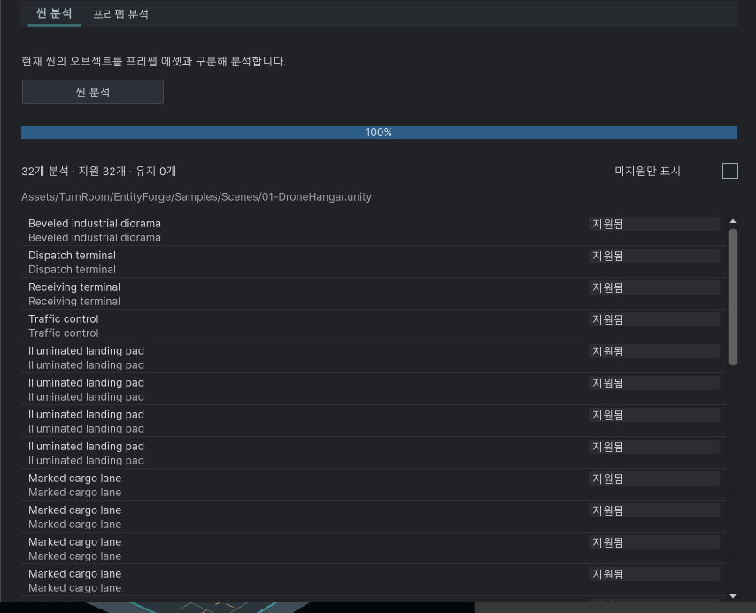

Tracefolio REPORTS & ISSUES
Tracefolio REPORTS & ISSUESEntity Forge 설정·미리보기·빌드 기록 흐름 정리
검증 대기성능 측정·사용 안내 탭을 제거하고 변환/빌드 기록 두 탭으로 정리했습니다. 프리팹 범위는 자동 변환 하위로 이동하고 목록 중복과 SceneView 포커스 전환을 제거했습니다.
작업 결과
상단은 변환과 빌드 기록 두 탭입니다. 사용 안내 버튼은 전역 설정 옆으로 옮겼습니다. 성능 측정 탭·측정/가져오기 버튼과 검색 명령을 제거했으며 이 창에서 측정 빌드를 시작하지 않습니다. 프리팹 전체/폴더 범위 설정은 자동 변환 하위에 모으고 master OFF일 때 비활성화됩니다.
변경 내용
적용 내용
분석 목록의 이름 아래 같은 경로를 반복 출력하던 코드를 제거했습니다. 지원 항목은 이름·상태만, 미지원 항목은 사유를 표시하고 전체 경로는 툴팁에 둡니다. SceneView.Focus 호출을 제거하고 대상 선택·화면 맞춤 뒤 Entity Forge에 포커스를 유지하도록 연결했습니다. 이는 포커스 전환 코드 수정이며 네이티브 최소화/가림 재현 검증은 미실행입니다.
분석 전 선행 작업을 요구하는 빈 상태 문구를 제거했습니다. 씬/프리팹 분석은 선택적 미리보기이며, 활성화된 변환은 사전 분석 없이 일반 Unity 빌드에서 처리되고 실제 결과는 빌드 후 기록 탭에서 확인하도록 안내했습니다. 기존 빌드 콜백의 날짜별 기록은 UI 분석 결과를 입력 조건으로 사용하지 않습니다. 자동 변환 기본 OFF는 유지합니다.

사용자 제공 기준 화면(85,370바이트)을 편집 없이 보존했습니다. 수정 후 캡처는 화면 포커스 금지로 미확보이며 전후 시각 검증 완료로 간주하지 않습니다.
검증
7개 어셈블리를 설치된 Unity 6000.0.83f1 참조로 컴파일하고 마지막 입력 해시를 대조했습니다. XML 파서로 프리팹 범위의 부모가 conversion-options이며 미리보기 내부가 아님을 검사했습니다. 두 탭과 버튼/검색 바인딩, 목록 중복 경로 제거, SceneView.Focus 제거, 안내 번역 451키×9언어와 치환 인자, 문서 9개/126개 링크 검사 통과. 388개 에셋 패키지 원본·메타 byte readback 통과. 검사 근거
남은 사항
화면 포커스 금지 조건으로 Unity/플레이어를 실행하거나 조작하지 않았습니다. 실제 목록 클릭 시 창 유지, 프리팹 단계 전환, 언어/테마별 배치 및 네이티브 빌드 기록 생성은 미검증입니다. 기존 문서 캡처 해시는 보존했습니다. 교훈 검토: 빌드 설정·선택적 미리보기·실제 기록의 역할 구분은 제품별 요구로 메뉴얼에 남겼으며 기존 포커스/실제 검증 지침을 적용합니다. 전역 지침 추가 없음.
작업 시간
- 제안 시간: 10~15분
- 실제로 완료된 시간: 2026-11-02 19:09:47 KST 시작. 19:13:27 KST 구현·비GUI 검사·패키지 검증 완료(3분40초). 공개 배포 확인 별도. 네이티브 실행 검증 완료 시각은 없음.
- XERJ: 실패 — Xerj.ps1 Status에서 노드 미실행 확인 후 rg·현재 소스·XML 파서와 설치본 컴파일로 대체.